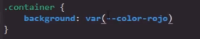
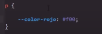
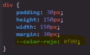
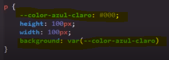

CSS posee la capacidad de trabajar con variables, al igual que en otros lenguajes estos son espación en memoria con una relación nombre/valor utilizados en este caso para almacenar estilos CSS, de ese mismo modo las varialbes pueden ser utilizadas las veces y la cantidad que haga falta.
Usar las variables para guardar los valores de una propiedad puede ahorrar mucho tiempo, por ejemplo: si se defininen los colores de la paguina con variables, y llegado el momento se nesecita cambiar estos colores bastara con modificar el valor de la variable en vez de buscar indibidualmente el color de cada elemento y modificarlo.
Las varibles en este lenguajes se dibiden en dis tipos:
Variables Globales
Son aquellas que pueden ser usadas por cualqueer selector, es decir estan disponibles por cualqueer propiedad del documento CSS, la forma de declarar un dato como variable es simple:
-
Se inicia la declaración dentro de una clase ":root"
-
Se inicia la declaración con dos(2) guiones (--)
-
Se le da un nombre a la variable seguido de dos puntos (:)
-
Por ultimo se le da un valor a la variable
Ejmeplo
Con eso la variable a sido declarada, para utilizarla en alguno de los selectores simplemete se ingresa la propiedad que uitlizara la variable y en su respestivo valor se ingresa la propiedad var(), con el nombre de la variable a utilizaren el interior de los parentesisñ, como se puede ver en este ejemplo
Ejmeplo
Variables locales
Se tratan de aquellas variables que unicamete estan disponibles dentro de una clase o de un elemento, para delcarar una varible como local se repiten los pasos anteriores, con la difernecia de que esta no se declara en la clase :root, en su vez se puede declara dentro de cualqueir selector que se desee, en su consecuencia la variable solo esta disponible para los elementos relacionados con esta.
Ejemplo
En este caso la variable unicamte esta disponible para las etiquetas p, a su vez si se da el caso de que la variable sea declarada para un elemento contendor todos sus elementos hijos podran hacer uso de esta, es decir si se declara en el contenedor, los elementos de su interior podran hacer uso de esta variable.
Ejemplo
A su vez las variables pueden ser re-definidas, para esto simplemte hay que volver a declarar la variable global dentro de un elemento o una clase con otro valor de esta forma:
Así el valor de la varable se sobre-escribira para esta clase o elemento, mientra que para lo demas esta seguira teniendo el mismo valor.
Nota: las varibles se pueden sobre-escribir sin imortar la gerarquia de los estilos, aún sise usa el "!inportant"